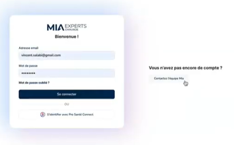
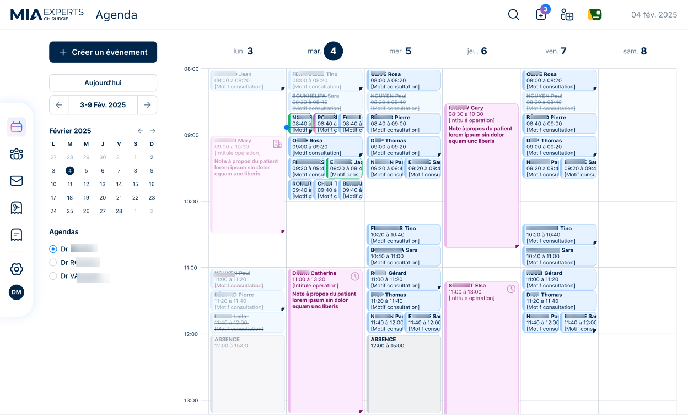
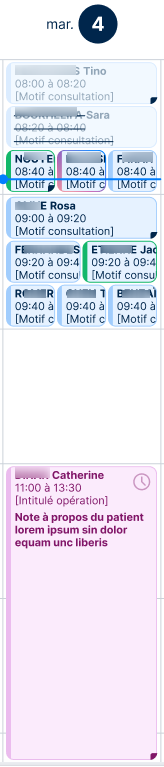
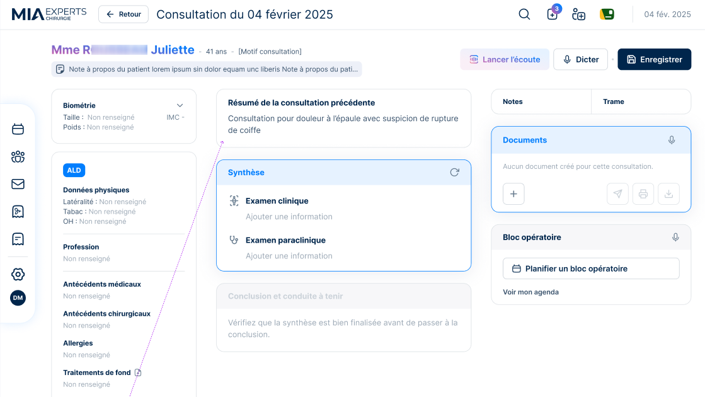
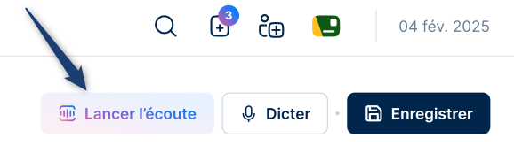
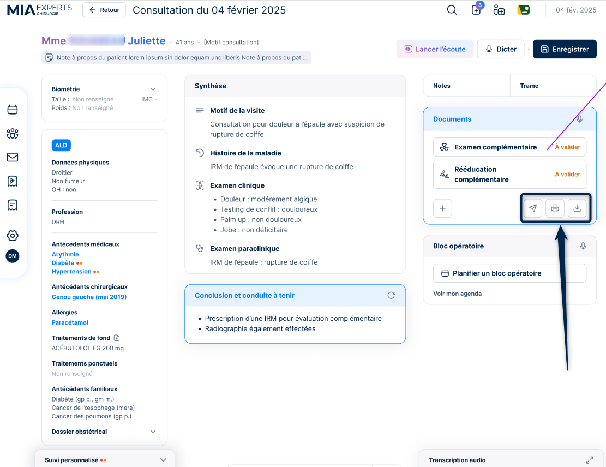
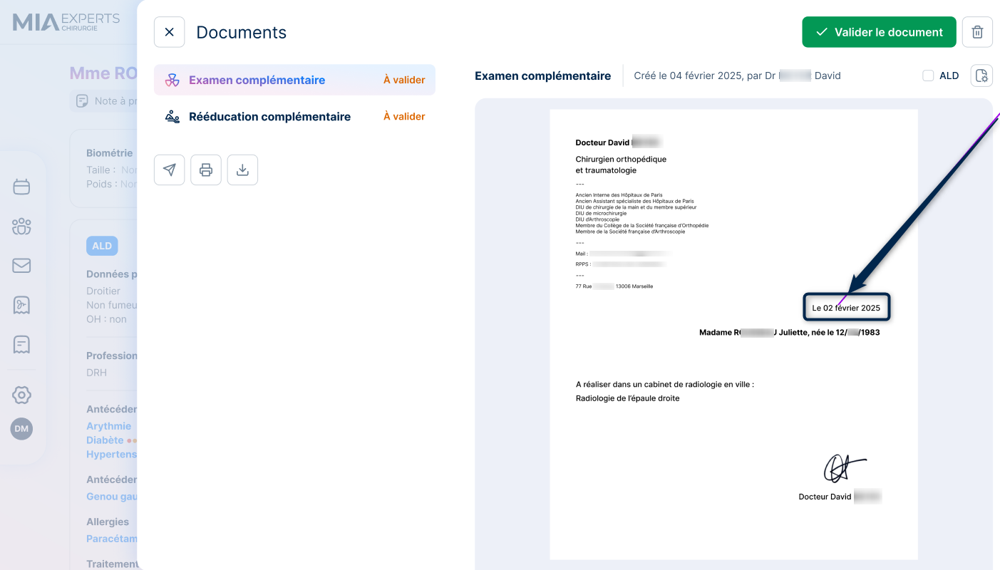
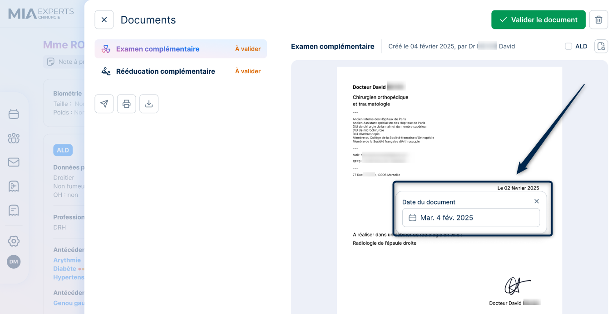

Bienvenue chez MIA Experts
Spécialistes dans notre domaine, nous mettons notre expertise à votre service. Naviguez dans le menu à gauche pour découvrir nos services et en savoir plus sur notre entreprise.
Au lancement du locigiel, vous devrez vous connecter avec vos identifiants ou via Pro santé connect.
MIA intègre un agenda synchronisé avec Doctolib (si vous avez déjà un abonnement avec eux). Tous les rendez-vous pris sur Doctolib y apparaissent automatiquement.Les informations du patient y seront reportées
Pour plus de lisibilité, l'agenda dispose de deux couleurs afin de distinguer les rendez-vous de consultations (en bleu) et les blocs opératoires (en rose).
En cliquant sur le rendez-vous le dossier du patient s'ouvre sur l'évènement (consultation ou bloc opératoire)
Depuis un clic sur le rendez-vous de consultation
Cliquez sur « Lancer l’écoute » et commencez simplement votre conversation avec le patient, vous dictez, MIA exécute !
Vous remarquerez une fenêtre de transcription audio en bas de l'écran
La transcription est ensuite traitée par MIA, entraînée par des chirurgiens afin de s’adapter précisément à votre manière de vous exprimer et à votre vocabulaire professionnel.
Une fois la dictée terminée, vous pouvez choisir d'ajouter manuellement un document, ou de dicter le fait de le rajouter. Grâce aux paramétrages ultra personnalisables effectués en amont, vous n'aurez que quelques mots à dire.
Enfin il vous suffit de relire l'ensemble des documents générés et de les valider.
Vous pouvez cliquer sur l'un des trois boutons, pour envoyer, imprimer ou télécharger les documents.
Biensûr, pour les cas très particuliers, vous avez accès au contenu pour le modifier en traitement de texte.
Par exemple pour modifier la date de l'ordonnance
 Depuis un clic sur le rendez-vous de consultation
Vous saurez tout sur notre logiciel à partir de cette merveilleuse page. qui a été faite par nos soins et qui va nous servir pour la sofcot, tout ça tout ça. Biensur vous pouvez prendre rdv avec notre merveilleux Vincent pour une démonstration.